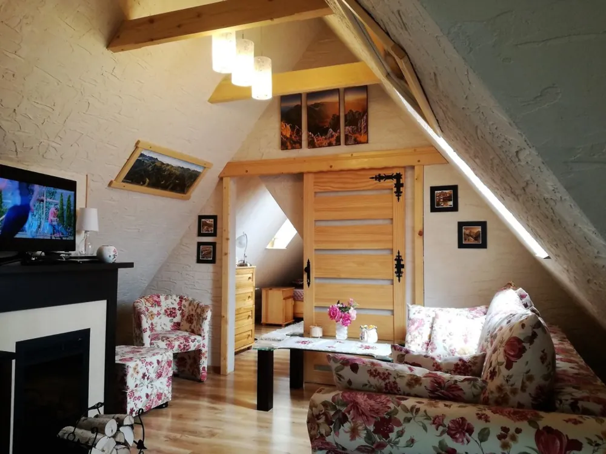
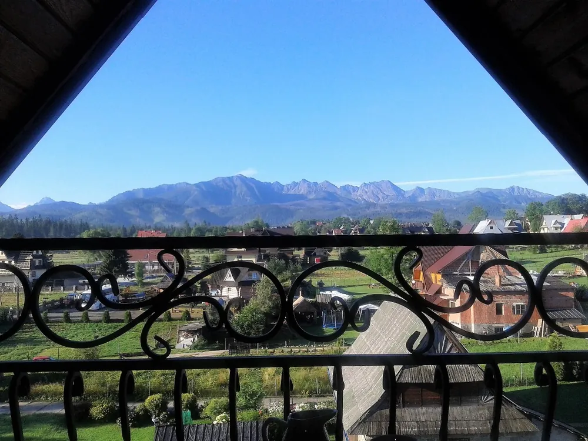
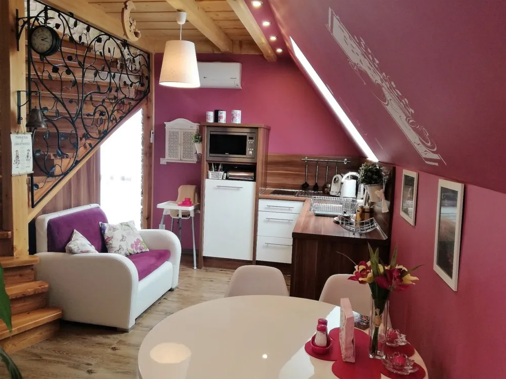
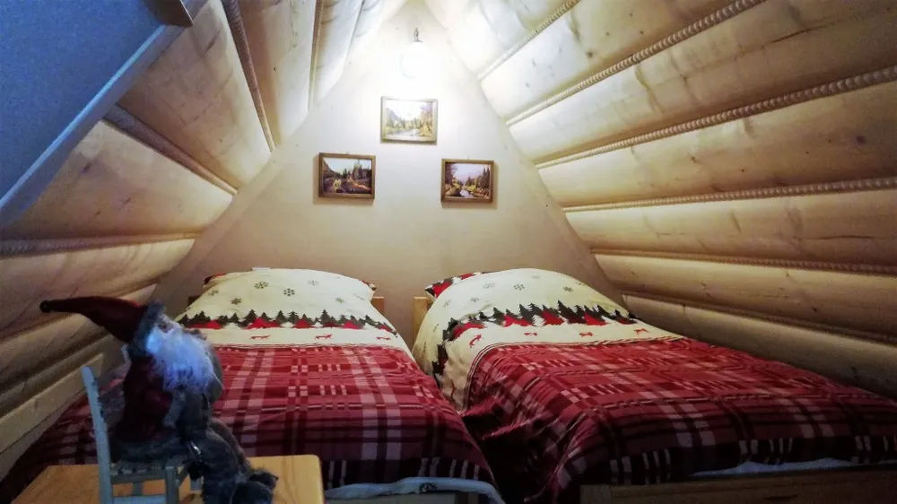
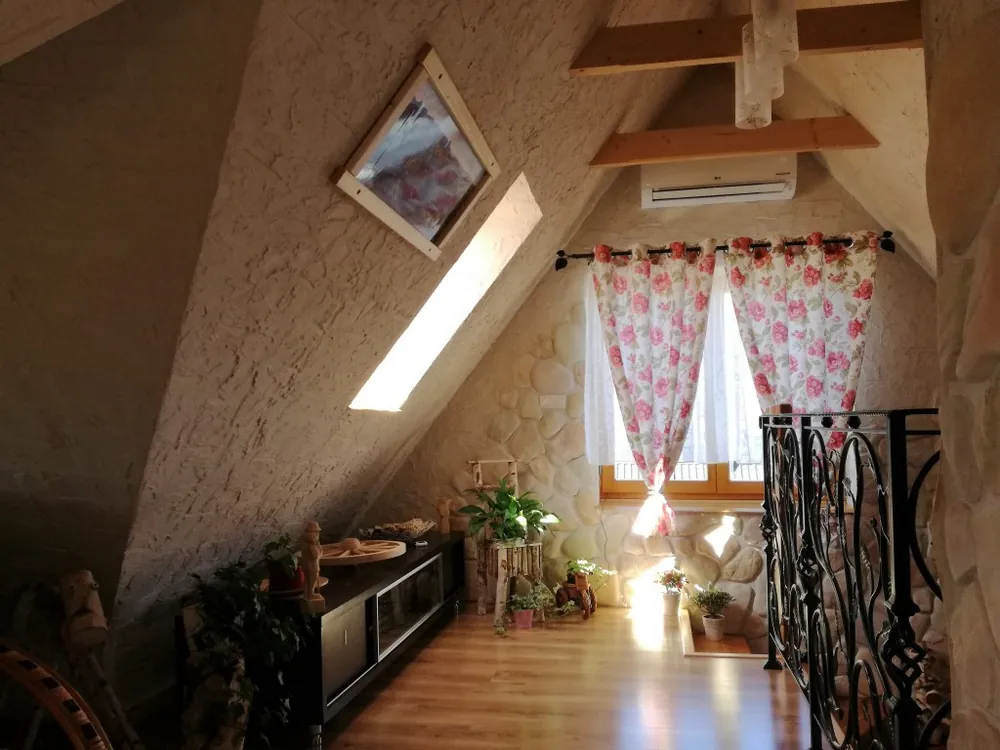
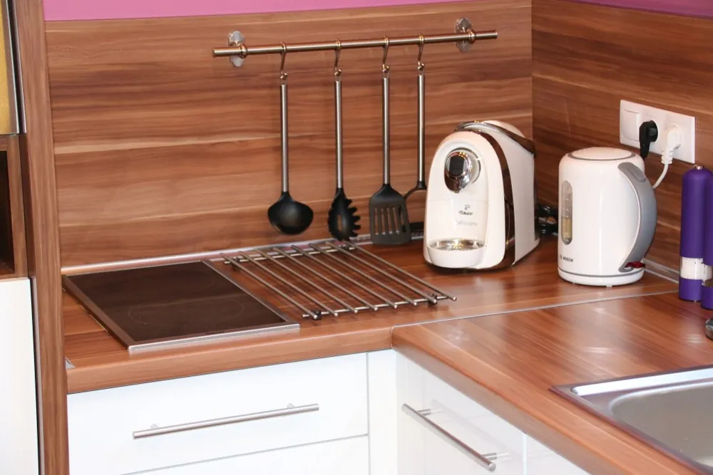
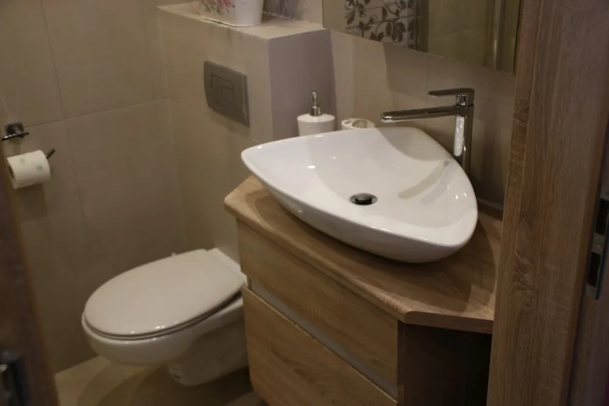
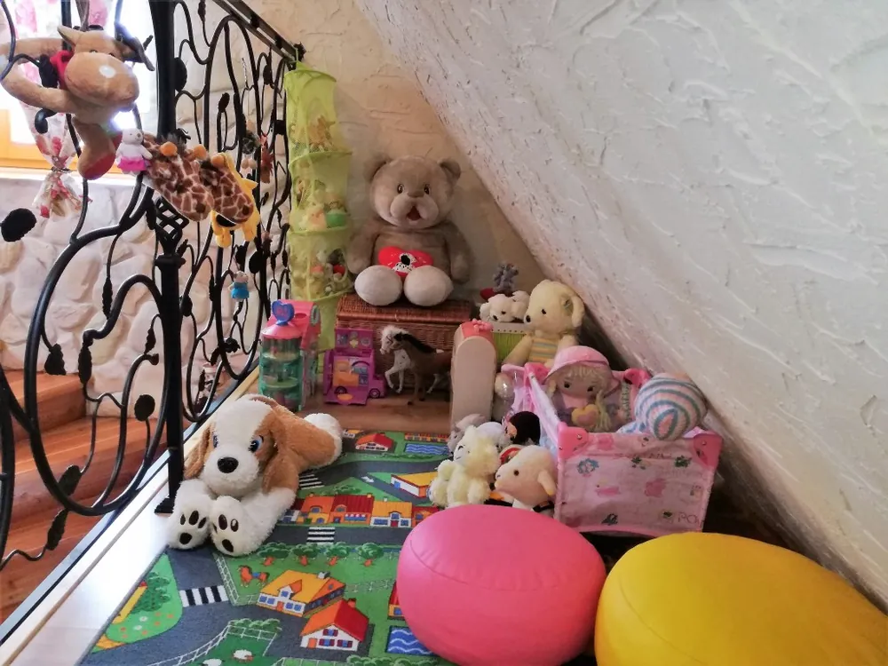
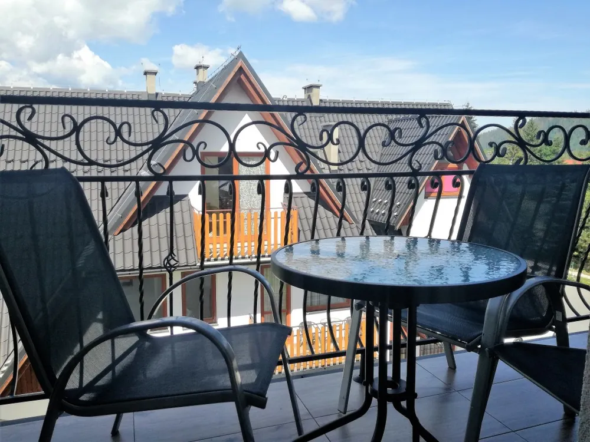

Apartament Hawrań
do 4 osób · 2 poziomy · klimatyzacja
Salon z kominkiem i rozkładaną sofą, sypialnia, w pełni wyposażona kuchnia z jadalnią, łazienka z dużą kabiną prysznicową i kącik zabaw dla najmłodszych. Bezpłatne WiFi i parking.
Zapytaj o termin w Hawraniu